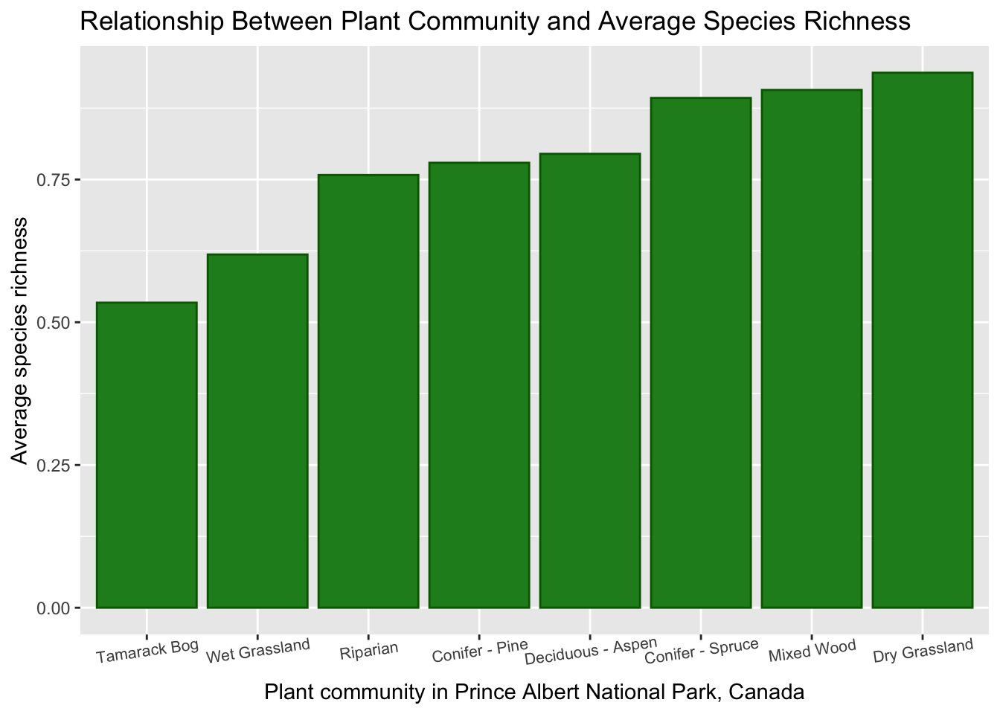
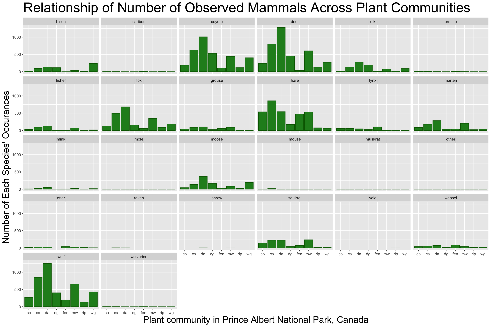
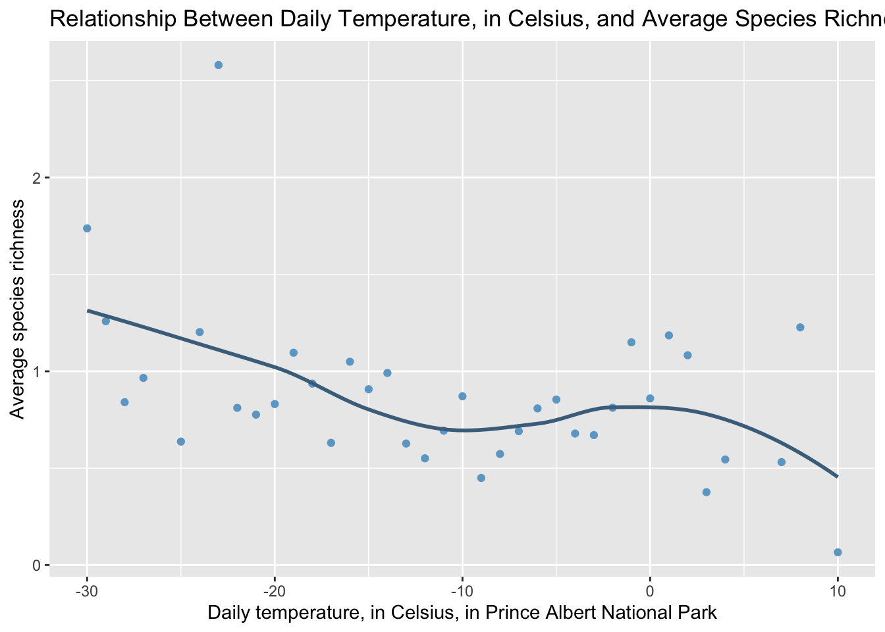
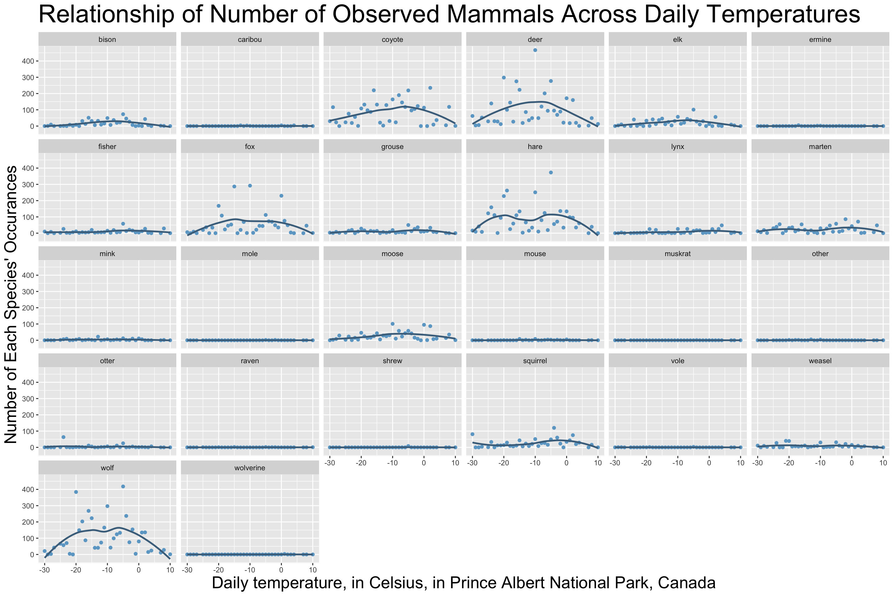
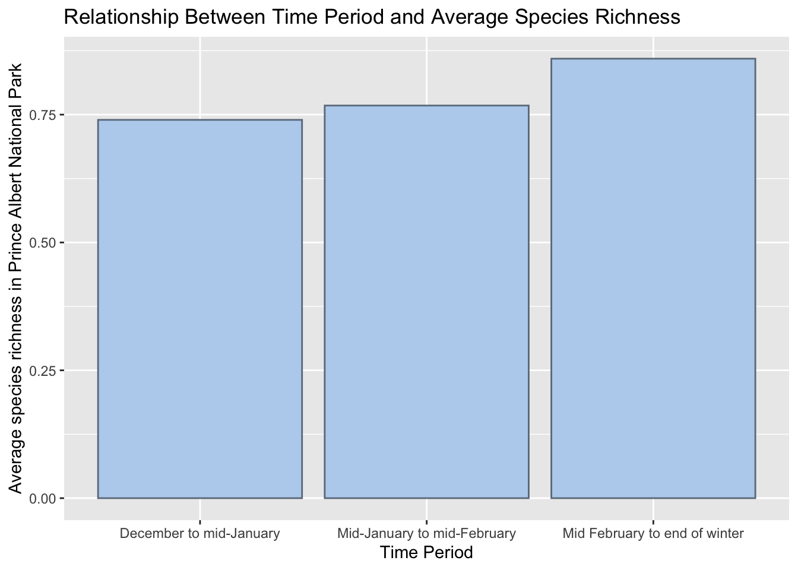
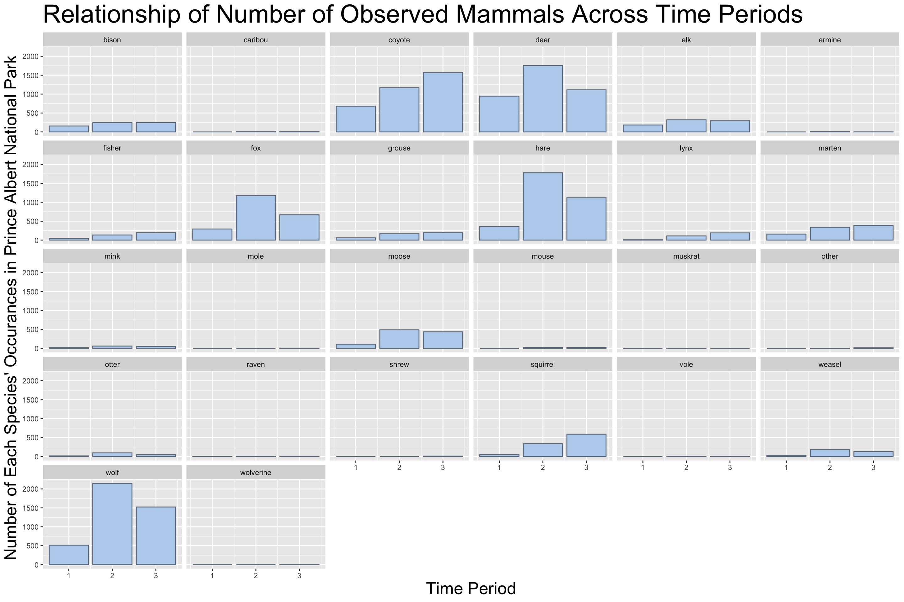

STAT 210 Coding Project
Data Description
For this project, I used a dataset looking at mammal abundance in Prince Albert National Park in Canada. The data was collected using seven snow transects. After 48 hours, the tracks left by mammals were recorded every 100 meters. The transects were refreshed either by fresh snowfall or by a drag pulled by a snowmobile. There are a lot of variables included, but the most important ones for my research questions are period which is recorded as a character, month, day, and year which are recorded as integers, cloudcover which is an integer, precipitation which is a character, temperature which is an integer, and plant community which is a character. Each species is listed as a variable with their presence recorded at a one and their absence recorded as a zero. Some research questions I want to answer are how does species abundance vary over time, over temperature, and over different plant communities?
Data Cleaning
In order to answer these research questions, the data has to be edited to make visualization easier. First, I selected only the variables I am interested in. Then, since values considered N/A were not recognized by R, I had to reassign the missing values so that R could understand those values were missing. Next, I reassigned the types of variables recorded to ensure that words were being interpreted by R as words and that numbers were being interpreted by R as numbers. The final step to clean this data was rotating the data so that each row contained the information for a singular observation rather than multiple. This makes visualization much easier!
Plant Communities
The first graphic shows that there is some variation in average species richness between the different plant communities. Tamarack bog was the least diverse with an average species richness of about 0.5. Dry grassland was the most diverse with an average species richness of about 0.95. The second graphic shows how each individual mammal counts vary across the plant communities. Some mammals, such as deer and wolves, have visually higher counts in certain communities compared to others. Some mammals, such as voles and muskrats, have a similar count across all communities. Not only does species richness appear to vary across the different plant communities, but it appears that some mammals have a clear preference for some communities over others.

Temperature
The first graphic shows that as the daily temperature increases the average species richness decreases. However, when looking at the graphic, it appears there is a flat section where average species richness does not change from about -15 to 0 degrees before the average richness drops back off. The second graphic shows how each individual mammal counts vary across daily temperature. Some mammals, such as foxes and hares, have an arced pattern. Some mammals, such as shrews and ravens, have a similar counts across the daily temperatures. This arced pattern implies that there is an ideal temperature that is not too warm or too cold for certain mammals to be active in winter. However, some mammals seem to have no preference in temperature as their count remained constant over all the recorded daily temperatures.


Time Period
The first graphic shows that as winter progresses the average species richness increases. Early winter had an average species richness of about 0.75. Late winter had an average species richness of about 0.85. The second graphic shows how each individual mammal counts varies as winter progresses. Some mammals, such as coyotes and fishers, have visually higher counts at certain time periods compared to others. Some mammals, such as wolverines and moles, have a similar count across winter. Not only does species richness appear to increase as winter progresses, but it appears that some mammals have a clear preference for certain periods of winter while others are observed consistently throughout winter.

